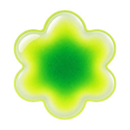
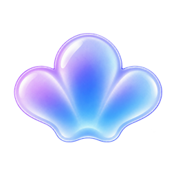

Домашняя студия
3 открытые задачи · личный проект
Открытые

Все задачи выполнены
Можно добавить новую или вернуться к выполненным.
Выполненные 1
- Освободить рабочий стол
Отметки в этом образце можно менять. После перезагрузки они сбросятся.
Задача
Домашняя студия
Файл изменён вне приложения
Ваш черновик остаётся в поле ниже. Сравните версии перед сохранением.
Версия в файле
Проверить свет. Добавить второй источник справа.
Ваш черновик
Проверить свет у окна и сохранить настройки для следующей съёмки.
Контекст проекта
Домашняя студия
Цель
Подготовить удобное место для небольших предметных съёмок дома.
Оборудование должно быстро убираться, а рабочий стол — оставаться свободным для обычных дел.
Ограничения
- Использовать уже имеющиеся свет и камеру.
- Не добавлять обязательные сроки к личным задачам.
- Хранить заметки и примеры локально.
Источники
- Заметки
- Локальные Markdown-файлы
- Внешние сервисы
- Не подключены
- Работа агента
- Только по запросу
Принятое решение

Сначала проверяем существующее оборудование, затем составляем список недостающего.
Пример записи · 18 сентября 2026Граница этого образца
Контекст приведён для проверки иерархии, длинного текста и читаемости. Здесь нет подключения источников, выполнения задач агентом или файловых операций.